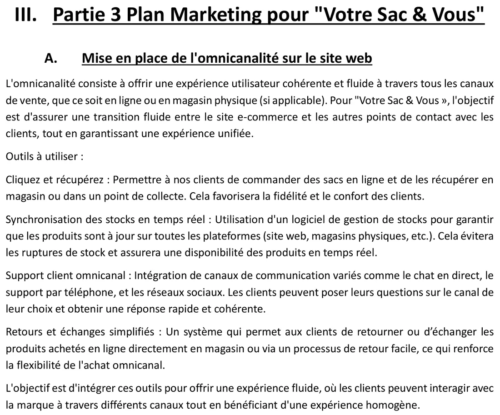

Caner Alpyuruk
Achats publics hospitaliers
Alternant acheteur à l’Hôpital Nord Franche-Comté · Master 1 EMP à l’Université de Haute-Alsace
Écouter, analyser, sécuriser.
C’est ainsi que je résume le métier d’acheteur hospitalier. Je l’apprends depuis août 2025 en alternance au service achats de l’HNFC, où je prépare des consultations de marchés publics avec les services, du besoin jusqu’à la publication. Après ma licence, un BUT GACO parcours MCMO, je poursuis avec un Master Entrepreneuriat et management de projets.
Formations et projets
- Épinglé : 2023-2026 · BUTLicence GACOParcours MCMO
- Épinglé : 2026-2028 · en coursMaster EMPManagement de projets
 Préparer le marché de refonte du site internet du GHT Nord Franche-ComtéBUT 3 · Individuel, en alternance
Préparer le marché de refonte du site internet du GHT Nord Franche-ComtéBUT 3 · Individuel, en alternance Exporter des sacs en coton biologique vers MacaoBUT 3 · Seul, en anglais
Exporter des sacs en coton biologique vers MacaoBUT 3 · Seul, en anglais Prospecter 300 établissements publics pour un cabinet qualitéBUT 3 · À six
Prospecter 300 établissements publics pour un cabinet qualitéBUT 3 · À six Construire la démarche qualité d’une salle de sportBUT 3 · En binôme
Construire la démarche qualité d’une salle de sportBUT 3 · En binôme Paradise Parfum : audit et stratégie outboundBUT 3 · En groupe, en consultants
Paradise Parfum : audit et stratégie outboundBUT 3 · En groupe, en consultants Tableau de bord Power BI : les festivals en FranceBUT 3 · En binôme
Tableau de bord Power BI : les festivals en FranceBUT 3 · En binôme Cas HERMISTE : dimensionner une force de venteBUT 3 · Cas de management commercial
Cas HERMISTE : dimensionner une force de venteBUT 3 · Cas de management commercial Cas TechStyle : plan d’action à partir du NPSBUT 3 · Cas de management commercial
Cas TechStyle : plan d’action à partir du NPSBUT 3 · Cas de management commercial NORMAL CTM Corporation, une plateforme imaginée pour Les Entrep’BUT 2 · À quatre
NORMAL CTM Corporation, une plateforme imaginée pour Les Entrep’BUT 2 · À quatre Attirer les groupes chez CAP Alpes ProvenceBUT 2 · En équipe
Attirer les groupes chez CAP Alpes ProvenceBUT 2 · En équipe Diagnostic et merchandising d’Intersport MontbéliardBUT 2 · En trinôme
Diagnostic et merchandising d’Intersport MontbéliardBUT 2 · En trinôme Challenge DCF : Ray-Ban MetaBUT 2 · En binôme, SAÉ 4.02
Challenge DCF : Ray-Ban MetaBUT 2 · En binôme, SAÉ 4.02 Négociation commerciale : le cas Dacia DusterBUT 2 · À quatre
Négociation commerciale : le cas Dacia DusterBUT 2 · À quatre
SAÉ e-commerce : « Votre Sac & Vous »BUT 2 · Individuel « Soutenons la Libye », une collecte avec l’UNICEFBUT 1 · Équipe de cinq, chef de projet
« Soutenons la Libye », une collecte avec l’UNICEFBUT 1 · Équipe de cinq, chef de projet Restaurant L’ALP : dossier de créationBUT 1 · Individuel
Restaurant L’ALP : dossier de créationBUT 1 · Individuel
Licence · 2023-2026
BUT GACO, parcours MCMO
Trois ans, grade de licence. La troisième année en alternance au service achats de l’Hôpital Nord Franche-Comté.
Trois années
- 2023-2024 · BUT 1IUT de Reims-Châlons-Charleville. Projet « Soutenons la Libye » et stage en ressources humaines chez CF2P.
- 2024-2025 · BUT 2, parcours MCMOIUT Nord Franche-Comté. Stage de deux mois au service achats de l’Hôpital Nord Franche-Comté.
- 2025-2026 · BUT 3 en alternanceService achats de l’Hôpital Nord Franche-Comté : deux consultations préparées jusqu’à leur publication.
Cinq compétences
- Achats, vente et relation clientjusqu’au niveau 2
- Gestion de projetjusqu’au niveau 3
- Pilotage et performancejusqu’au niveau 3
- Marketing et internationaljusqu’au niveau 3
- Omnicanal et digitaljusqu’au niveau 2
Projets à la une
- Refonte du site du GHT
- Export vers Macao
- Prospection CR Qualité
- Soutenons la Libye
Master · 2026-2028
Master EMP
Entrepreneuriat et management de projets, parcours Management de projets, à l’Université de Haute-Alsace. Master 1 en cours, en alternance.
Huit blocs de compétences · 1 à 4
- BC01Contribuer à un projet entrepreneurial dans un contexte de transformation des écosystèmes d’affaires
- BC02Conseiller les porteurs de projets en contexte d’initiatives entrepreneuriales et intrapreneuriales
- BC03Conduire des projets entrepreneuriaux dans un contexte de transformations
- BC04Gérer l’activité et les processus entrepreneuriaux et/ou d’innovation
Huit blocs de compétences · 5 à 8
- BC05Piloter la performance globale et la création de valeur
- BC06Accompagner les évolutions de l’organisation face aux risques
- BC07Manager les équipes et les organisations
- BC08Développer une expertise professionnelle au niveau individuel et collectif
Mes missions cette année
- Traiter et suivre les fiches internes d’achat (FIA) et les dotations des services.
- Créer et mettre à jour les articles, les fournisseurs et leurs prix dans le logiciel de gestion économique et financière.
- Suivre les demandes d’achats courantes, en lien avec les services utilisateurs.
- Demander des devis et préparer des tableaux comparatifs.
- Appuyer les acheteurs dans le suivi administratif des marchés et des commandes, et tenir à jour les tableaux de suivi et de pilotage du service.
- Préparer des appels d’offres et leurs analyses : sourcing, benchmark, coût total de possession (TCO).
BUT 3 · Individuel, en alternance
Préparer le marché de refonte du site internet du GHT Nord Franche-Comté
Voir le projetBUT 1 · Équipe de cinq, chef de projet
« Soutenons la Libye », une collecte avec l’UNICEF
Voir le projetProjets
16 projets, seul ou en équipe
Du premier semestre à l’alternance, avec leurs dossiers et leurs traces.
Voir les 16 projetsDepuis août 2025
Alternant acheteur
Service achats de l’Hôpital Nord Franche-Comté, à Trévenans.
En chiffres, en troisième année
Les dossiers de la troisième année
- Refonte du site internet du GHT
- Marché de transport de corps et de biens
- Marché des pains et viennoiseries
- Feuilles absorbantes pour le bloc opératoire
- Achats courants et responsables
- Suivi budgétaire
Mes outils
Achats et gestion
- MARCO
- Business Object
- MEVA
- SAP
- Excel
- FISY
Mes outils
Données, projet et relation client
- Power BI et Power Query
- Access
- Sphinx
- Monday.com
- Notion
- OneNote, Teams et Outlook
Mes outils
Communication et création
- WordPress
- Canva
- Word et PowerPoint
Langues
- Anglais
- Allemand
Méthodes, outils et savoir-être, avec les cinq compétences de la licence et les huit blocs du master.
Toutes mes compétences